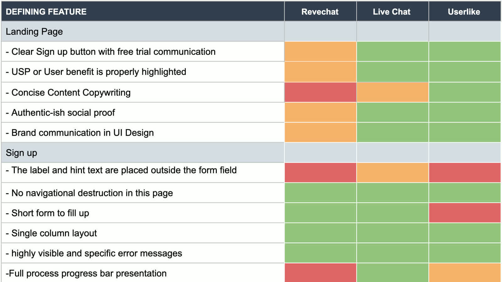
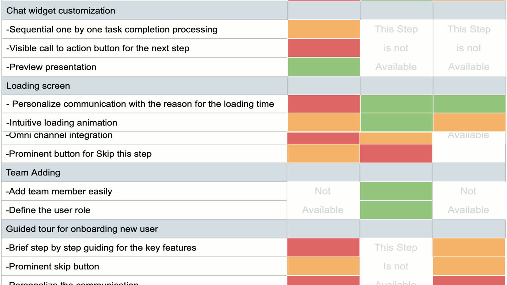
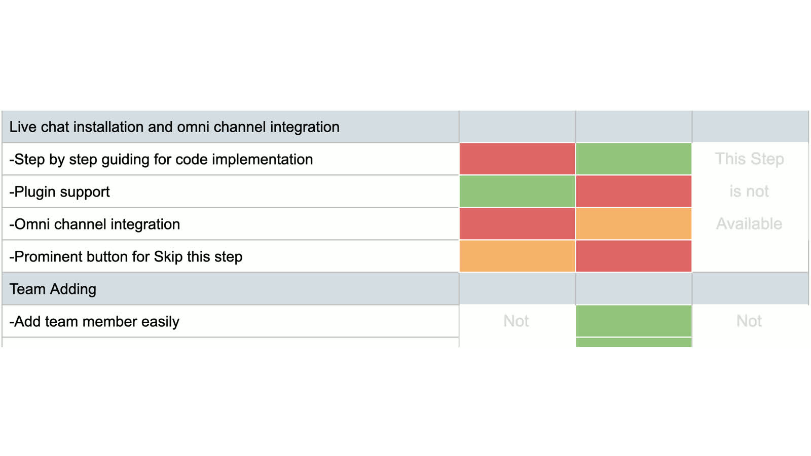
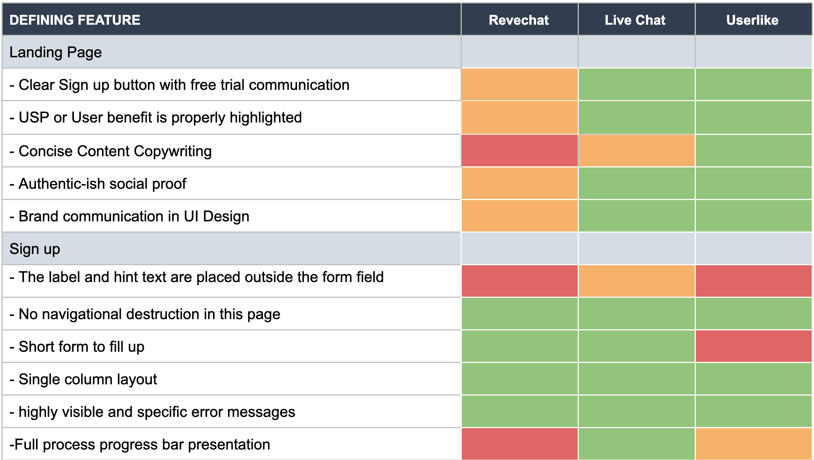
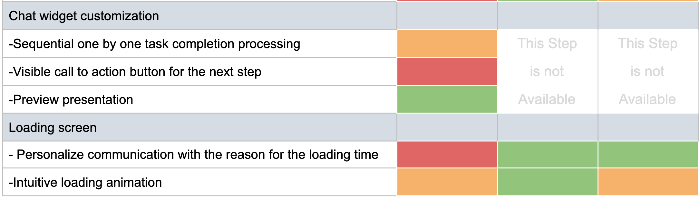
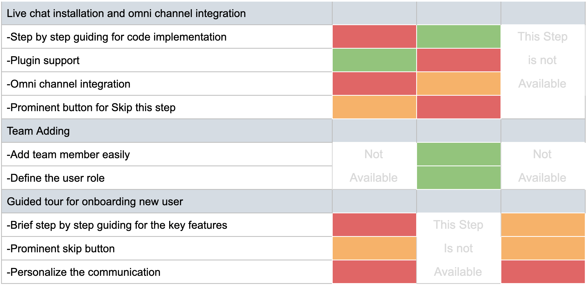
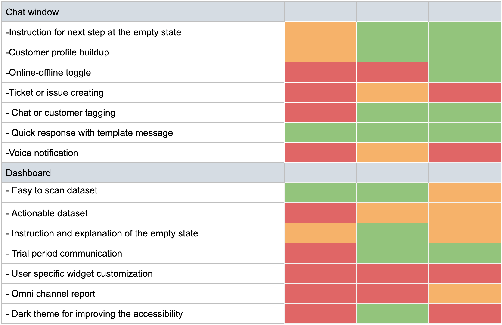
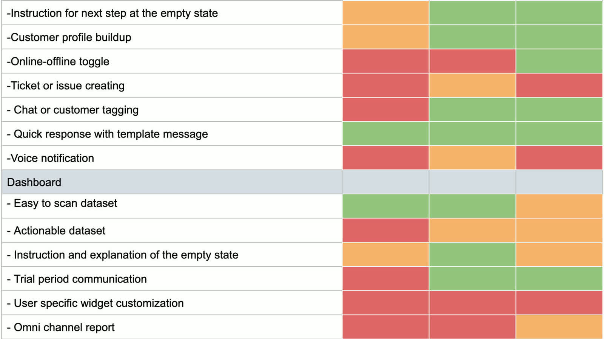

Scannable Data
Reframed information hierarchy so users could understand performance signals quickly without decoding dense blocks.
Case Study
Restructuring onboarding and dashboard workflows for a complex enterprise live-chat product.
REVE Chat is a SaaS platform for customer support chat, help desk operations, and analytics. I led a structured UX review across the onboarding lifecycle, benchmarked competitors, and drove dashboard redesign directions that improved product clarity and decision quality.

Context
The project had two business-critical objectives: first, analyze the full new-user journey from signup to early product use and deliver improvement recommendations; second, redesign the dashboard based on those findings to improve usability and engagement.
This was a product-structure challenge in a time-constrained SaaS environment where decisions had to balance user needs, business goals, and implementation realities.
The Problem
New users encountered avoidable friction in form behavior, step continuity, integration clarity, and dashboard actionability. As a result, the experience felt heavier than necessary at the exact moment users were deciding whether to continue with the product.
Complexity
This work involved complexity across:
Strategic Approach


Solution Logic
Instead of treating this as a screen-level cleanup, I approached it as a system design problem. The redesign direction focused on making dashboard data scannable, actionable, and relevant to user roles while reducing setup friction for new users.
Reframed information hierarchy so users could understand performance signals quickly without decoding dense blocks.
Recommended explicit CTAs, custom date controls, and role-relevant shortcuts to turn data into decisions.
Proposed clearer setup support, trial communication, and progressive guidance to reduce first-use drop-off risk.




Outcomes
The outcome was a clearer redesign direction for one of REVE Chat's highest-impact product areas. More importantly, the work created a structured evaluation model for identifying and prioritizing UX issues in future product cycles.
Preview links from the source case study: V1.1 dashboard, V1.2 new-user dashboard, V1.3 dark dashboard, V2.1 top-nav dashboard, V2.2 dark top-nav dashboard.

Reflection
This project reinforced a leadership lesson: in enterprise products, experience quality depends on workflow structure and decision clarity more than isolated UI improvements.
Even with tight constraints, a disciplined audit approach can expose high-impact design opportunities and create momentum for broader product maturity.